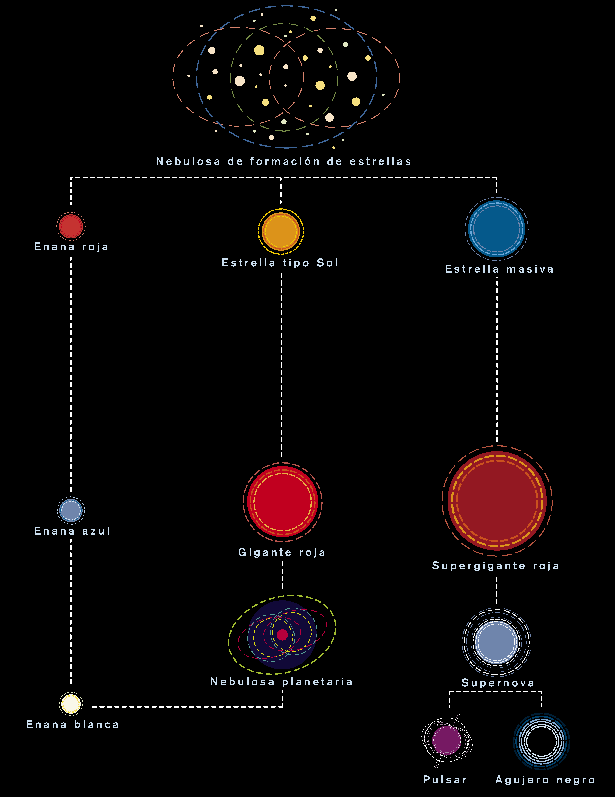
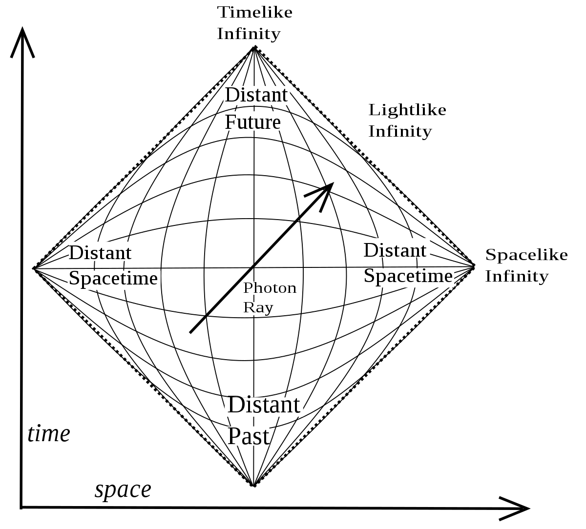
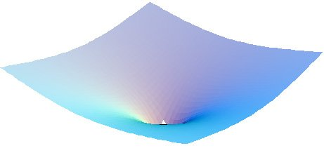
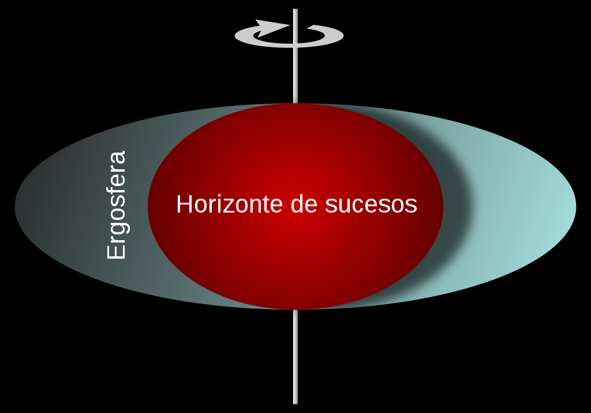

Objetos Compactos
Pedro Villegas, Yésica Gaggino
1. Introducción
El estudio de los objetos compactos, enanas blancas, estrellas de neutrones y agujeros negros, comienza con el final de la evolución estelar. Son remanentes estelares, cuerpos tan particulares que hasta donde sabemos sólo pueden producirse en los catastróficos eventos que dan muerte a las estrellas. A grandes rasgos, estos objetos se caracterizan por no producir reacciones nucleares, y no alcanzar la estabilidad mediante presión térmica. ¿Pero cómo consiguen contrarrestar la presión gravitatoria y alcanzar el equilibrio? Las enanas blancas, por su parte, se soportan por la presión de degeneración electrónica, y las estrellas de neutrones debido a la presión de degeneración neutrónica y de quarks. Los agujeros negros son una excepción ya que no se resisten a la presión gravitatoria, y pueden ser considerados como los únicos objetos producidos por un completo colapso gravitacional. Estas características dotan a los objetos compactos de cualidades físicas extremas como pueden ser sus pequeños tamaños, altas densidades, sus grandes interacciones magnéticas y gravitatorias, y los procesos altamente energéticos a los que se los relaciona.
El entendimiento de los objetos compactos se lo debemos a la física moderna, que a lo largo de -más que nada- el último siglo fue desarrollando conceptos y mezclando teorías que nacían de distintos campos de la física para dar explicación a los extraños fenómenos que ocurren en el cielo bajo sus nombres.
En esta monografía intentaremos explicar los procesos que les dan origen, sus características, el proceso histórico que les dio nombre y la importancia en su estudio.
2. Evolución Estelar
El nacimiento de los objetos compactos se da en el final del proceso de evolución estelar. Entendemos por el final de este proceso al momento en el cual las fuerzas involucradas en la mantención del equilibrio de una estrella se ven desbalanceadas, provocando así un desequilibrio y haciendo que la gravedad de la materia involucrada se vea sin sustento.
En las estrellas, este equilibrio se logra entre la presión gravitatoria y la presión térmica producida por las reacciones de fusión nuclear dadas por lo general en el núcleo estelar, pero estas reacciones se dan bajo un conjunto de condiciones termodinámicas, por lo que tienen un tiempo de vida limitado. Las estrellas de baja masa (menores a 8 masas solares) durante su estadía en la secuencia principal acumulan una cantidad de helio en el núcleo que imposibilita la fusión de hidrógeno en el mismo. Esto produce la creación de una cáscara de fusión de hidrógeno alrededor, que provoca una compresión del núcleo y una expansión de las capas exteriores, entrando así en la fase de subgigante y posteriormente de gigante roja. Durante esta etapa, si la estrella tiene muy poca masa la degeneración electrónica del núcleo de helio impedirá la fusión del mismo durante un tiempo manteniéndolo estable e inerte, hasta que la temperatura sea la suficiente como para desatar el proceso de flash de helio, comenzando así de manera abrupta su fusión en carbono y oxígeno -estrellas de masas mayores comienzan a producir estas reacciones de manera más suave debido a la poca intervención de la degeneración-. En esta etapa las estrellas se acumulan en regiones llamadas de apelotonamiento rojo (red clump) o de rama horizontal, hasta que la cantidad de carbono y oxígeno inerte en el núcleo repite el proceso de impedir la fusión en el mismo. Aquí es cuando la estrella entra en la rama asintótica de gigante, caracterizada por producir fusiones nucleares tanto de helio como de hidrógeno en cáscaras que envuelven al núcleo. En esta etapa la estrella puede volverse variable, debido a que las condiciones en la capa de helio fusionándose pueden ser inestables, deteniendo o iniciando su fusión repetidamente. Si la estrella llegado este punto no posee la suficiente temperatura como para fusionar estos elementos más pesados, su núcleo se comprime gravitatoriamente mientras que las capas más externas son expulsadas en una serie de pulsos térmicos durante la fase de gigantes en la rama asintótica, produciendo así dos remanentes estelares: una nebulosa planetaria, y el núcleo estelar bajo el nombre de Enana Blanca.
Las estrellas con M>8 Msol al abandonar la secuencia principal atravesarán rápidamente un proceso de quema de elementos que dejarán a la estrella con una estructura de “cáscaras” de distintas composiciones que irán desde la capa más exterior compuesta por hidrógeno, y hacia su interior helio, carbono, neón, oxígeno y silicio, hasta llegar a un núcleo de hierro inerte sostenido por su propia presión electrónica. Estas reacciones son posibles debido a las condiciones de presión y temperatura en las distintas regiones de la estrella. Una vez alcanzado el proceso de fusión de silicio en hierro, el núcleo no puede generar energía fusionando elementos más pesados, dado que el hierro es incapaz de producir reacciones nucleares exotérmicas. Por ende, la estrella no encuentra ninguna otra forma de seguir produciendo energía, mientras tanto el núcleo de hierro se hace cada vez más grande, comprimiéndose, elevando su temperatura y radiando a energías cada vez más altas. Comienza a haber una fuerte presencia de radiación gamma capaz de romper los núcleos de hierro en átomos más livianos: a esto se lo llama fotodisociación o fotodesintegración del hierro. Este proceso ocurre muy rápido y es altamente endotérmico, por lo que va absorbiendo la energía interna de la estrella, produciendo el colapso gravitatorio y dejando como residuo una gran cantidad de neutrones libres. La captura de electrones también contribuye a aumentar la cantidad de neutrones en el núcleo y sus alrededores.
Llegado este punto, la masa del núcleo estelar indicará el remanente final del proceso evolutivo de la estrella: si teníamos un núcleo con una masa entre 1.4 Msol (el límite de Chandrasekhar) y aproximadamente 3 Msol (límite de Tolman-Oppenheimer-Volkoff), la presión producida por el gas degenerado de neutrones sumada a la repulsión entre los neutrones por la fuerza fuerte será suficiente como para detener el colapso gravitatorio. Como el colapso del núcleo estelar produce una cantidad masiva de neutrinos altamente energéticos, se cree que estos en conjunto con una gran cantidad de neutrones producen una onda de choque que hace “rebotar” al material de las capas medias y externas de la estrella colapsada. En este proceso se crean elementos más pesados que el hierro, y la energía cinética liberada crea el fenómeno que conocemos como supernova. Por último, si la masa del núcleo estelar supera las 3 Msol, el núcleo no podrá resistirse a la presión gravitatoria y colapsaría creando un agujero negro.
No se sabe con exactitud el valor del límite de Tolman-Oppenheimer-Volkoff, el cual se cree separaría la posibilidad de tener una estrella de neutrones como remanente a la de un agujero negro. De hecho, se cree que en un determinado rango de masas podríamos tener ambos remanentes, o una estrella de neutrones que luego vuelva a colapsar para producir un agujero negro. Pero a grandes rasgos, se acepta que no podríamos tener una estrella de neutrones a partir de un núcleo estelar mayor a 3 Msol, dado que los cálculos teóricos para el mismo caen entre 1.5 y 3 Msol y el peso de la evidencia observacional. Por otra parte, el valor exacto del límite de Chandrasekhar depende de la composición química del objeto.

Figura 1: esquema evolutivo de distintos tipos de estrellas
3. Historia
Para hablar de la historia de los objetos compactos es necesario distinguir la historia observacional de la historia teórica, puesto que hace ya algunos siglos que se observó el primer objeto compacto –una enana blanca- pero su nombre no hacía referencia a lo que hoy entendemos cuando hablamos de este cuerpo, y sorprendentemente hace la misma cantidad de tiempo que se empezaban a desarrollar ideas alrededor de los cuerpos celestes que absorben luz sin dejarla escapar, lo que hoy conocemos como un agujero negro. Pero estos objetos y estas ideas no fueron estudiados ni comprendidos hasta que no se lograron los avances tecnológicos y científicos necesarios: para la formulación teórica fue muy importante el desarrollo de la teoría de gravitación de Einstein tanto así como el descubrimiento y posterior estudio de la física cuántica y de partículas, mientras que para el estudio observacional de estos objetos fue clave el avance tecnológico que se dio durante la carrera espacial dada en la segunda mitad del pasado siglo. La espectroscopía, el estudio en ondas de radio y las altas energías fueron los personajes principales de esta historia.
3.1 Enanas Blancas
La primera enana blanca se descubrió en 1783 por William Herschel, en el sistema estelar triple 40 Eridani. En 1910, Henry Norris Russell, Edward Charles Pickering, y Williamina Fleming, descubrieron que, a pesar de ser una estrella tenue, 40 Eridani B (nuestra protagonista) era de tipo espectral A o blanca, dato confirmado oficialmente en 1914 por Walter Adams.
La segunda enana blanca descubierta fue la compañera menor de Sirio, Sirius B. En 1844, Friedrich Beesel predijo que Sirio debía tener una estrella compañera, hasta el momento inobservable, que provocara los cambios en la posición proyectada en el cielo que se observaban en Sirio. En 1862 Alvan Graham Clark realizó la primera observación de Sirius B y posteriormente fue identificada como parte del sistema binario. Nuevamente en 1915 Walter Adams identificó su espectro, y la clasificó como una estrella tipo A.
La tercera estrella en ser clasificada como tal fue Van Maanen 2 en 1917, una estrella solitaria con gran movimiento propio. Durante esta época se encontró que varias estrellas compartían características con ésta: poseían medidas inusualmente grandes de movimientos propios, eran muy poco luminosas y aun así presentaban tipos espectrales que no coincidían con lo conocido: eran incluso menos luminosas que las estrellas menos luminosas de tipo espectral G o K. No fue hasta 1922 que William Luyten acuñó el nombre enana blanca, según las características que estas presentaban: magnitudes absolutas inusualmente bajas para sus tipos espectrales. A partir de 1930 empezaron a descubrirse enanas blancas no clásicas, que presentaban distintos tipos espectrales y por lo tanto distintas composiciones químicas.
1926 fue un año crucial para el entendimiento de estos cuerpos. Ese año Enrico Fermi y Paul Dirac publicaron la estadística que lleva sus nombres (o estadística F-D), un modelo estadístico cuántico que describe el comportamiento físico de un sistema de partículas idénticas e indistinguibles con spin semientero, y que obedecen el principio de exclusión de Pauli: ninguna de estas partículas puede ocupar el mismo estado cuántico simultáneamente. A estas partículas se las llama fermiones, y entre ellos se encuentran el electrón, los quarks, los neutrinos y, como partículas compuestas, los protones y neutrones. El mismo año, Ralph Fowler en su trabajo “On Dense Matter” nota que, haciendo uso de estadística clásica en enanas blancas, la energía de las partículas pertenecientes a estos cuerpos parecería ser incluso menor a la que tendrían si se encontrasen en el cero absoluto de temperatura. Pero esta paradoja no pasaba utilizando la estadística de Fermi-Dirac: él mismo decía que “todas las complicaciones parecen desaparecer”. Las altas densidades que presentaban las enanas blancas sumado al comportamiento libre de los electrones en ellas le sugerían que utilizara estas estadísticas, dándole así una moderna explicación a la estructura de estas peculiares estrellas: las mismas estarían sostenidas por la presión de degeneración electrónica, una presión que nace del principio de exclusión de Pauli, que impide que los electrones compartan estado cuántico en una misma unidad de volumen.
Subrahmanyan Chandrasekhar, físico indio, en 1930 decide utilizar los resultados provistos por Fowler para combinarlos con sus conocimientos en relatividad general, descubriendo así que las enanas blancas (sostenidas por los mecanismos ya contados) sólo podrían existir hasta un cierto límite debido a efectos relativistas, que dependía a grandes rasgos de constantes universales como la constante de gravitación universal, la velocidad de la luz y la constante de Planck. Este límite es de 1.4 Msol y produjo mucha controversia entre la comunidad astrofísica británica, puesto que Arthur Eddington, astrofísico de gran influencia, se opuso totalmente a reconocer la existencia de este límite y no cambió su postura en los años posteriores, a pesar de la opinión de otros grandes científicos a favor del trabajo de Chandrasekhar.
Todos estos conceptos fueron modificando y moldeando las teorías de evolución estelar que hoy conocemos. Aportes como el de Chandrasekhar cumplieron un rol decisivo en el entendimiento de las etapas finales de vida de las estrellas.
3.2 Estrellas de neutrones
En 1932 el físico James Chadwick descubre la existencia del neutrón. En 1933, antes de cumplirse 2 años del descubrimiento, los astrónomos Walter Baade y Fritz Zwicky proponen la existencia de las estrellas de neutrones, tratando de dar una explicación al origen de las supernovas: un producto de la transformación de una estrella que cesa su ciclo de vida para convertirse en una estrella de neutrones.
Los primeros cálculos realizados sobre este objeto fueron realizados por Robert Oppenheimer, George Volkoff y Richard Tolman en 1939. Ellos lo describieron como un gas degenerado de neutrones, en analogía con las enanas blancas, y que también compartían una característica con ellas: de existir, las estrellas de neutrones poseerían un límite de masa posible. Sus cálculos mostraron que la masa máxima que podría ser soportada mediante la degeneración neutrónica sería de 0.75 Msol –hoy el límite de Tolman-Oppenheimer-Volkoff ronda las 3 Msol, pero el desconocimiento del comportamiento interno de estas estrellas y sus ecuaciones de estado deja muchas incertezas al respecto-. De todas formas, se creía que estas estrellas serían muy débiles para ser observadas por lo que no fue un foco de atención durante muchos años.
Décadas más tarde, en 1967, el astrofísico italiano Franco Pacini publicó un artículo sugiriendo que las estrellas de neutrones con fuertes campos magnéticos podrían liberar su energía rotacional produciendo un gran flujo de partículas relativistas. Durante estos años, varias detecciones de señales en radio y rayos X estaban siendo detectadas y buscando ser clasificadas. Pero quien dio en el clavo fue Jocelyn Bell mientras trabajaba para el equipo de Antony Hewish, ella detectó señales de radio de corta duración y extremadamente regulares, con un período de pulsación de 1,3seg al que llamó “Little Green Man 1”. De esta forma se encontró el objeto que daba las características necesarias para demostrar la existencia de las estrellas de neutrones: tal como Pacini había predicho, estos objetos producirían un fuerte flujo de partículas relativistas según su campo magnético, y teniendo en cuenta la rotación de la estrella damos con la forma en la que nosotros recibimos esa información, en forma de pulsos regulares, lo que les dio el nombre de púlsares. Si bien hubo controversia acerca de si se trataba de enanas blancas o estrellas de neutrones, próximas observaciones de fenómenos similares con períodos de pulsación menores aclararían este asunto. Durante los siguientes años hubo especial interés en estos objetos, y en 1974 Joseph Taylor y Russell Hulse descubrieron el primer pulsar binario, un candidato a laboratorio para testear una de las consecuencias de la relatividad general: estrellas de neutrones en sistemas binarios de corto período deberían experimentar un decaimiento en sus órbitas emitiendo ondas gravitacionales. Este decaimiento en efecto fue medido, y desde 2017 interferómetros como LIGO observan estas ondas.
El púlsar más famoso es el que se encuentra en el centro de la Nebulosa del Cangrejo, el cual está en el mismo punto en el que, en el año 1054, se registró una brillante supernova (en el momento era tan solo una brillante estrella) por astrónomos árabes y chinos. Fue reconocido en 1968 por Richard Lovelace y su descubrimiento contribuyó a la unión de los eventos de supernova con estos objetos.
3.3 Agujeros Negros
El concepto de un cuerpo tan denso del cual no pueda escapar ni siquiera la luz fue propuesto en 1784 por el clérigo inglés John Michell. Período en el cual la teoría de Newton de gravitación universal era un avance científico novedoso, donde el concepto de velocidad de escape de un cuerpo fue lo que impulsó a Michell a proponer tal objeto. Él entendía que estos objetos supermasivos y no radiantes podrían ser detectados por sus efectos gravitacionales en cuerpos visibles cercanos. Pero tiempo más tarde, al ser propuesto el comportamiento ondulatorio de la luz, se perdió interés en estas ideas.
En 1915, Albert Einstein desarrolló su teoría de la relatividad general y demostró que la gravedad influye en el movimiento de la luz. Luego, Karl Schwarzschild, en medio de una enfermedad fatal, encontró una solución para las ecuaciones de Einstein, la cual describe el campo gravitacional de una masa puntual y una esférica. Modelo que reemplazó al modelo newtoniano en la descripción del campo gravitacional de una estrella. Acuñando así el término de radio de Schwarzschild, medida del tamaño de un agujero negro de simetría esférica y estático.
En 1963, en Dallas, de la mano del novedoso descubrimiento del primer cuásar a fines de 1950, se realizó el primer simposio de Astrofísica Relativista, en el cual el matemático neozelandés Roy P. Kerr anunció haber encontrado una solución exacta de la ecuación de campo de la relatividad general, para un objeto rotante. Pero este descubrimiento no produjo interés entre la comunidad científica, hasta tiempo después, cuando comenzaron a desarrollar técnicas para el estudio del espacio-tiempo.
A principios de la década de 1970, se descubrió el primer objeto que podría ser considerado como agujero negro de masa estelar, el cual forma parte del sistema binario Cygnus X-1 (ver figura 2). El modelo que permitía explicar la emisión en rayos X observada consistía en un disco de material muy caliente formado por la acreción de gas de la estrella compañera tipo O sobre el agujero negro. Este estudio motivó el desarrollo de la teoría de discos de acreción. Hoy en día se conocen muchos sistemas binarios similares, llamados binarias de rayos X, y en muchos casos se ha logrado determinar que las masas de los objetos compactos son consistentes con la de los agujeros negros de masa estelar.

Figura 2: representación artística del agujero negro Cygnus X-1 junto a su compañera, una supergigante azul. Las líneas onduladas representan la emisión en rayos X.
El 14 de septiembre del 2015, el observatorio LIGO hizo la primera detección directa de ondas gravitacionales: la señal era consistente con la predicción teórica para un merger de agujeros negros, uno de 36 Msol y otro de 29 Msol. Las ondas gravitacionales sugerían que la separación entre estos dos objetos era solo de 350 km, aproximadamente 4 veces el radio de Schwarzschild correspondiente a estas masas. Debido a esto, la compacidad de estos objetos debía ser extrema, dejando a los agujeros negros como la interpretación más plausible. Desde entonces, muchos eventos de ondas gravitacionales fueron observados.
En abril del 2017, el proyecto Event Horizon Telescope, que consiste en 8 observatorios de radio en 6 montañas y 4 continentes, observó la galaxia Messier 87, en la constelación de Virgo, para dar con lo que sería, tras dos años de procesamiento de datos, la primera imagen de un agujero negro, el agujero negro supermasivo que habita en el núcleo galáctico. En la cual se aprecia claramente el disco de acreción alrededor del horizonte de eventos, como podemos ver en la figura 3.

Figura 3: de izquierda a derecha, la galaxia Messier 87, un acercamiento a su núcleo y la primera imagen obtenida de un agujero negro, tomada por el proyecto Event Horizon Telescope.
4. Características
4.1 Enanas Blancas
Las enanas blancas son uno de los remanentes estelares más típicos. Se cree que son el producto final de estrellas enanas de entre 0.07 y 10 Msol, con una composición que depende del proceso evolutivo de la misma y por lo tanto de su masa inicial. Se cree que si bien la mayoría de las enanas blancas está compuesta por carbono y oxígeno -residuos de la última fusión que la estrella fue capaz de realizar-, estas poseen una atmósfera rica en hidrógeno y helio que explicarían el estudio espectroscópico de estos objetos, y su origen sería las capas intermedias de la estrella que no fueron totalmente expulsadas luego de la fase asintótica de gigante y quedaron ligadas gravitatoriamente al remanente.
Los estudios espectrales de estas estrellas nos dan las composiciones de sus atmósferas. Las más típicas presentan principalmente líneas de hidrógeno, pero también pueden tener líneas de helio una o dos veces ionizado, carbono, o presentar espectros continuos, y se las clasifica de la siguiente forma:
– DA: fuertes líneas de hidrógeno
– DB: fuertes líneas de He I
– DO: fuertes líneas de He II
– DC: espectro continuo
– DZ: fuertes líneas de metales (exceptuando el carbono)
– DQ: fuertes líneas de carbono
Podemos observar sus estructuras en la figura 4. Considerando los fuertes campos gravitatorios de las enanas blancas, podemos pensar que los elementos más pesados tenderían a hundirse en la atmósfera dejando generalmente expuestos los átomos más livianos, por lo que estrellas DZ deberían su espectro a un evento reciente de acreción.

Figura 4: Clasificación y estructura teórica de las enanas blancas. Se piensa que, en las más frías, el núcleo de la enana blanca inicia un proceso de cristalización.
El rango de masas observado varía entre 0.17 y 1.33 Msol con un pico en 0.562 Msol, y el hecho de estar compuestas de materia degenerada las provee de una extraña característica: mientras más masivas sean, menor será su radio, y mayor será el momento de los electrones que la sostienen. Las relaciones masa-radio las proveen de un tamaño comparable al de la Tierra, con una densidad del orden del millón de veces mayor.
Pueden ir desde colores muy azules (temperaturas superiores a los 20000 K con máximo de intensidad situado en longitudes de onda mucho más cortas que el visible) hasta muy rojos (temperaturas inferiores a 4000 K y máximo de intensidad a longitudes de onda largas). Al no poseer ninguna fuente térmica éstas se irían enfriando gradualmente, hasta volverse invisibles. Este es un proceso que debería tomar más de 10^35 años, comparable con el tiempo de vida del protón, pero esto depende fuertemente del comportamiento cuántico de su composición. De todas formas, existe evidencia de este enfriamiento, por lo que la luminosidad de las enanas blancas podría servir como indicadores de edades de sistemas estelares.
En cuanto a su estructura, se cree que la atmósfera ha de ser muy delgada y permanece muy pegada a la estrella. Debajo, habría una gruesa corteza de unos 50 km recubriendo un núcleo compuesto por núcleos de carbono y oxígeno cristalizado, debido a la falta de energía térmica. Tanto la corteza como el núcleo cristalizado estarían sostenidos por la degeneración electrónica y la fuerza nuclear fuerte. Una, dotando a los electrones de altas energías sin la necesidad de incrementar la temperatura del sistema, y la otra manteniendo los núcleos atómicos separados entre sí.
Las enanas blancas que conforman sistemas binarios, de especial interés aquellos en los que la compañera es una gigante roja, pueden producir eventos de supernova si las características orbitales son las necesarias. Estos eventos son de especial interés puesto que son en esencia muy similares, por lo que son muy buenos estimadores de distancias. Esta clase de supernovas son las de tipo Ia.
4.2 Estrellas de Neutrones
Son un remanente estelar producto de un fin de ciclo de vida mucho más catastrófico: un evento de supernova. Nacen de un núcleo estelar inerte, principalmente compuesto de hierro, que, tras desencadenar el proceso de fotodesintegración, donde la radiación gamma rompe los núcleos en helio y luego en neutrones (liberando una gran cantidad de neutrinos), y en conjunto con la captura de electrones (reacciones electrón-protón que resultan en más neutrones y neutrinos) este núcleo se vuelve muy rico en neutrones y absorbe muchísima energía del interior de la estrella, provocando su colapso. Tal como ocurre con las enanas blancas, las estrellas de neutrones tienen un límite de masas posibles, lo que hace que no todas las estrellas que logren acumular hierro en su núcleo dejen una estrella de neutrones como remanente: algunas incluso pueden no dejar nada.
Los límites para las masas son la masa de Chandrasekhar (~1.4 Msol) y el límite TOV (~3 Msol), y se deben a que por debajo del límite de Chandrasekhar la gravedad aún no vence la degeneración electrónica, por lo que se tendría una enana blanca, mientras que superando las 3 Msol la degeneración neutrónica es demasiado débil para resistir la presión gravitatoria del núcleo, produciéndose así un agujero negro.
Tienen un diámetro de aproximadamente 20km, gravedades superficiales del orden de 2x10^11 gravedades terrestres, y campos magnéticos un millón de veces más fuertes. A pesar de ser su origen un evento de supernova, también se los encuentra aislados y en sistemas binarios, siendo este último especialmente importante para poder determinar sus masas.
De la forma en que fueron descubiertas, y la forma en que es más fácil observarlas es cuando se presentan como púlsares. Las estrellas de neutrones, debido a que conservan gran parte del momento angular de su estrella “madre”, rotan a velocidades muy altas. Por otra parte, los fuertes campos magnéticos que poseen producen una gran cantidad de radiación sincrotrón en torno a sus polos, y de esta forma crean grandes jets de partículas generalmente visibles en rayos X y radio. Cuando combinamos estos efectos, damos con la característica pulsante de los púlsares: al no estar alineado el eje de rotación con el eje magnético, los jets de partículas describen un movimiento periódico sobre un cono, que al alinearse con la tierra recibimos como señal. Los períodos en los cuales recibimos estas señales varían entre segundos y más de 700 pulsaciones por segundo, según el púlsar. Existe otra clasificación de púlsares, los púlsares de rayos X, que emiten jets a mayores energías debido a la acreción de materia proveniente de un objeto compañero.
La estructura de una estrella de neutrones puede dividirse en 4 capas:
-Una atmósfera de unos pocos centímetros de espesor, compuesta de átomos.
-Una corteza exterior, compuesta por un entramado de núcleos atómicos y un líquido de Fermi de electrones degenerados (lo que compone a las enanas blancas).
-Una corteza interior que llega a tener una densidad de transición de 1.7 x 1014 g cm-3, en la que se presenta un fluido de neutrones incapaces de unirse para formar núcleos atómicos.
-El núcleo, donde la densidad de transición fue superada y todos los núcleos atómicos fueron disueltos en sus partículas constituyentes. También podría albergar otras clases de partículas, en este caso elementales, como podrían ser quarks, hiperiones o mesones.
No se puede decir con certeza la composición interna de estos objetos, ya que muchas características e interrogantes caen en el comportamiento de las partículas elementales del sistema estándar. Según se cree, distintos objetos podrían ser formados por partículas como quarks strange, aún más compresibles que los neutrones. Pero poca información hay para asegurar la existencia de estos objetos que actualmente, solo existen en los juegos teóricos.
4.3 Agujeros Negros
En 1967 y de la mano del físico canadiense Werner Israel, aparece un teorema fundamental sobre las propiedades de los agujeros negros: "No hair Theorem". Demostrado parcialmente por Brandon Carter, David C. Robinson y Stephen Hawking, éste nos dice que es posible describir cualquier agujero negro solamente con tres variables: su masa M, su carga eléctrica Q y su momento angular J. Por otro lado, sabemos que toda la información sobre la materia que formó el agujero negro desaparece dentro del horizonte de eventos, y por lo tanto las observaciones son inaccesibles. El peculiar nombre fue dado por el físico John Archibald Wheeler.
De esta manera, los clasificamos en: agujeros negros que solo tengan masa (Agujero negro de Schwarzschild), que tengan masa y roten (Agujero negro de Kerr), que tengan masa y carga eléctrica (agujero negro de Reissner-Nordstøm) o con masa, carga eléctrica y rotación (agujero negro de Kerr-Newman). A continuación, haremos una breve descripción de cada uno, pero primero introduciremos el concepto de diagrama de Penrose, del cual solo nos limitaremos a decir que es una región que representa todo el espacio tiempo y está delimitada por una frontera, donde su eje vertical corresponde al tiempo y el horizontal el espacio. Además, se considera a la velocidad de la luz como c=1, por ende, los rayos de luz corresponderán a curvas que se mueven a 45° de inclinación y todas las partículas deberán seguir curvas con inclinaciones superiores, como consecuencia del postulado de la teoría de la relatividad, el cual nos dice que nada puede viajar más rápido que la velocidad de la luz.

Figura 5: Diagrama de Penrose
· Agujero negro de Schwarzschild: Este se define con un único parámetro: la masa M. Es una región del espacio- tiempo delimitada por una superficie imaginaria llamada horizonte de sucesos, en el cual la velocidad de escape coincide con la velocidad de la luz, de este modo, todo aquello que atraviese esta frontera quedará atrapado dentro del agujero negro de manera irreversible. Por lo tanto, no existe modo de observar su interior.
Una de las propiedades es que, dentro del horizonte de eventos, existe una región llamada singularidad, donde el campo gravitatorio se volvería tan intenso, que cualquier objeto que lo atravesara, terminaría colapsando.

Figura 6: Geometría del espacio tiempo, deformada por un agujero negro de Schwarzschild
· Agujero negro de Kerr: A diferencia del agujero negro de Schwarzschild, este también rota, es decir que tiene un momento angular J. Además de estar delimitado por un horizonte de sucesos, en este tipo de agujeros negros encontramos otra región llamada ergosfera, en la cual aún puede escapar la luz y cuya rotación induce altas energías en los fotones que la cruzan. En el interior de esta nueva región encontramos el horizonte de sucesos con su respectiva singularidad, que tiene forma de anillo debido a su rotación.
Cabe destacar que este tipo de agujero negro es el que más se ajusta a la realidad, puesto que son el resultado del colapso de estrellas supermasivas, las cuales rotan, por ende, sus remanentes también deben hacerlo.

Figura 7: esquema lateral de un agujero negro de Kerr
· Agujero negro de Reissner-Nordstrøm: Son agujeros negros teóricos que posee una masa M y carga Q, pero es estático y esféricamente simétrico. Al igual que el de Schwarzschild y el de Kerr, tiene una frontera dada por el horizonte de eventos, pero además encontramos otro límite, llamado horizonte de Cauchy.
Esta frontera es altamente inestable ante perturbaciones. De hecho, si se enviasen pulsos de luz desde afuera del agujero negro, cuando llegaran a dicha frontera estos se acumularían y producían un pulso electromagnético muy energético, es decir, que la mínima perturbación desde el exterior se convertiría en una muy grande dentro del agujero negro y nuestro horizonte de Cauchy se transformaría en una singularidad.
· Agujero negro de Kerr-Newman: Este se caracteriza por tener una masa M, una carga Q y un momento angular J. Es una región que está delimitada por tres zonas: un horizonte de eventos, un horizonte de Cauchy y una ergosfera. Como este tipo de agujero negro es rotante, por la conservación del momento angular, su forma será elipsoidal, dentro el cual encontraremos una singularidad en forma de anillo o toro comprimido a volumen prácticamente cero.
Se piensa que este tipo de agujeros negro, no representa a objetos astrofísicos reales, ya que un objeto astrofísico cargado atraería del medio interestelar partículas de carga contraria y se descargaría rápidamente.
4.3.1 Clasificación según su masa
Si hacemos una clasificación respecto a la masa de un agujero negro, estos pueden ser separados en agujeros negros de masa estelar y agujeros negros supermasivos.
Los agujeros negros de masa estelar se forman cuando una estrella de entre 30 y 70 masas solares se convierte en supernova e implosiona. Pueden ser detectados cuando forman parte de un sistema binario, en el cual la distancia entre los dos cuerpos es poco mayor al tamaño de su compañera. En este tipo de sistema, al evolucionar la estrella compañera y convertirse en gigante, parte de su envoltura es atraída gravitatoriamente mientras gana energía cinética lo que produce un aumento de la temperatura, proceso que denominamos acreción.
Es importante señalar que existen observaciones que evidencian su existencia.
El segundo grupo es el de los agujeros negros supermasivos. Se cree que estos son los causantes de la actividad nuclear en las galaxias. Durante los últimos años, investigadores han buscado este tipo de objetos midiendo la rotación y las velocidades de las estrellas y el gas cercano de los centros galácticos. Este estudio llevó a la conclusión que, si las velocidades son tan grandes, como en la Galaxia del Sombrero, 1000 km/s, implicaría una masa mayor de la que vemos en las estrellas. Entonces, la explicación más acertada sería un agujero negro.
Así como sucede con los agujeros negros de masa estelar, las observaciones confirman su existencia, y como sucede en estos, la materia acretada por el agujero negro se calienta, dando lugar a la emisión de alta energía. Además, parte de esta materia es eyectada antes de alcanzar el agujero negro, formando importantes jets de materia acelerada con velocidades cercanas a la de la luz.
Se encuentran en galaxias cercanas y galaxias activas, y se cree que tienen una masa de varios millones de masas solares. Estas masas se han medido recientemente usando métodos cinemáticos, y se han encontrado aproximadamente 50 a partir de 2005.
El reciente estudio de los agujeros negros sugiere la evidencia de un tercer tipo, los agujeros negros de masa intermedia (IMBH), sin embargo, no está clara su formación. Por un lado, son demasiado masivos para ser producto de un colapso de una sola estrella. Por otro lado, sus entornos carecen de alta densidad y velocidades observadas en los centros galácticos. Existen dos hipótesis respecto a su formación. La primera nos habla de la fusión de agujeros negros de masa estelar con otros objetos compactos mediante radiación gravitacional y la segunda sobre la colisión de estrellas masivas en cúmulos estelares densos seguida del colapso.
Si bien los investigadores estiman que podría haber muchos agujeros negros candidatos a formar parte de este tercer tipo, aún se sigue investigando.
4.3.2 Radiación de Hawking
En un principio, se creía que los agujeros negros no tenían temperatura, puesto que de otro modo emitirían radiación, y como un agujero negro todo lo absorbe, su temperatura debía ser nula. No fue hasta 1974, cuando Stephen Hawking y como consecuencia del principio de incerteza de Heisenberg, el cual nos dice que en el vacío se forman pares de partícula-antipartícula que se aniquilan instantáneamente, observó que, al producirse este fenómeno en el límite del horizonte de eventos, podría ocurrir que alguno de los pares no podría volver a aniquilarse, ya que una de las partículas quedaría dentro del horizonte y la otra escaparía. Como consecuencia, un observador situado a cierta distancia del horizonte, observaría que el agujero negro estaría emitiendo radiación al igual que cualquier cuerpo caliente, concepto que hoy se conoce como radiación de Hawking.
El hecho que los agujeros negros sean objetos calientes implica que satisfacen las leyes de la termodinámica, lo cual nos dice que se podría estudiar macroscópicamente, pero para ello es necesario una teoría acerca de la gravedad cuántica, la cual aún no existe.
5. Conclusiones
El estudio de los objetos compactos nos permite conocer los fenómenos más extremos de la naturaleza. En ellos, grandes y distantes campos de investigación científica se ven acoplados, y es necesario utilizarlos en conjunto para poder dar explicaciones a las observaciones. Pertenecen a los límites de nuestro conocimiento, y son grandes impulsores de la creación de nueva ciencia.
Con este trabajo se intentó tener un acercamiento con el final del proceso evolutivo de las estrellas para una breve caracterización de lo que hoy entendemos por sus remanentes. Y contar, sin dejar de dar importancia, cómo es que hoy contamos con este conocimiento.
Referencias
- Compact Objects in Astrophysics. White Dwarfs, Neutron Stars and Black Holes - Camenzind, M. - Springer - 2007 – 9783540257707
- Wikipedia
- http://tux.iar.unlp.edu.ar/boletin/bol-mar14/Pellizza%20-%20agujeros%20negros.pdf
- https://rdu.unc.edu.ar/bitstream/handle/11086/55/15854.pdf?sequence=1&isAllowed=y
- https://www.iar.unlp.edu.ar/biblio/htdocs/artic/tesis/aguje_perez_16.pdf
- https://ui.adsabs.harvard.edu/abs/1926MNRAS..87..114F/abstract
- https://iopscience.iop.org/article/10.1086/123146
- https://www.youtube.com/watch?v=RHUrI-1Qcjs&ab_channel=JuanFabregat
- https://www.youtube.com/watch?v=OuxLo-lrOss&list=PLOPFAg4mOJ13vJrHoHJkEvqWsAYcat_MY&index=15&ab_channel=QuantumFracture
- https://www.youtube.com/watch?v=n3J71WUgyAA&ab_channel=InstitutodeF%C3%ADsicaTe%C3%B3ricaIFT
- https://authors.library.caltech.edu/5999/1/BAApr34.pdf